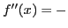
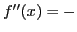

Next: Curve tracing Up: Maxima, minima and inflection Previous: Points of inflection Contents Index
Examine the following curves for points of inflection and direction of bending.
Solution.
 .
.
First step. .
Second step.
,
 and
and  , critical values.
, critical values.
Third step. .
Fourth step. When  ,
,
 ; and when
; and when
 ,
. Therefore, the curve is concave upwards
to the left and concave downwards to the right of
,
. Therefore, the curve is concave upwards
to the left and concave downwards to the right of  . When
,
; and when
,
. When
,
; and when
,
 .
Therefore, the curve is concave downwards to the left and
concave upwards to the right of
.
Therefore, the curve is concave downwards to the left and
concave upwards to the right of
 .
.
The curve is evidently concave upwards everywhere to the
left of  , concave downwards between and
, and concave upwards everywhere to the
right of
.
, concave downwards between and
, and concave upwards everywhere to the
right of
.
Solution. .
First step. .
Second step. When  , both first and second derivatives are infinite.
, both first and second derivatives are infinite.
Third step. When , ; but when , .
We may therefore conclude that the tangent at is
perpendicular to the  -axis, that to the left of the curve
is concave upwards, and to the right of it is concave downwards.
Therefore must be considered a point of inflection.
-axis, that to the left of the curve
is concave upwards, and to the right of it is concave downwards.
Therefore must be considered a point of inflection.
Ans. Concave upwards everywhere.
Ans. Concave downwards everywhere.
Ans. Concave downwards to the left and concave upwards to the right of  .
.
Ans. Concave downwards to the left and concave upwards to the right of  .
.
Ans. Concave downwards to the left and concave upwards to the right of .
Ans. Concave downwards to the left and concave upwards to the right of .
Ans. Concave upwards everywhere.
Ans. Concave upwards to the left of  , concave downwards
between
, concave downwards
between  and
and  , concave upwards to the right of
, concave upwards to the right of  .
.
Ans. Points of inflection are ,  being any integer.
being any integer.
Ans. Points of inflection are x = nπ, n being any integer.
david joyner 2008-08-11